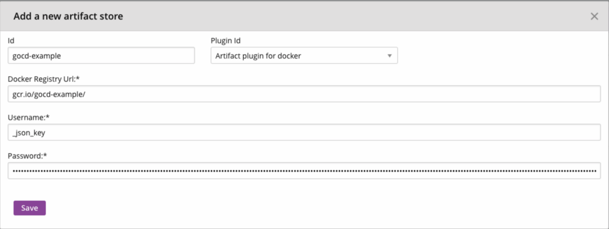

Recently, a colleague and I had to spike on the possibility of migrating our CI/CD infrastructure from a VM based design to a Kubernetes based one.
While exploring how to do it, we had to spend some time to find out all the information we needed just to install and configure GoCD without the migration. So I decided to write this and a few other posts hoping someone like me would find it helpful. This is the second part on Configuring Google Container Registry (GCR) as an Artifact Store in GoCD. You can find the first part on Installing and Configuring GoCD on GKE using Helm.
GoCD allows configuration of artifact stores such as Dockerhub, Amazon's ECR, Google's GCR to store and pull docker image artifacts. Depending on your version you can get two types of configuration windows. Let me show the latest configuration window of the artifact store`

There are two options based on the Registry Type. The first one is Amazon ECR. There are corresponding options for ECR Registry ID, AWS Region, AWS Access Key Id and AWS Secret Access Key.The second one says 'Others' and lists Dockerhub, GCR and private. For Dockerhub there are fields for username and password along with Docker Registry URL.
The older plugin version does not have a separate option for Amazon ECR. It just has the same fields for all stores

Trying to configure GCR in both the versions seems a bit confusing as GCR best practices state the use of a service account for CI/CD pipelines.
Now if you try to create a service account, you might get a json file with the following fields:
{
"type": "service_account",
"project_id": "<project-id>",
"private_key_id": "<private-key-id>",
"private_key": "<private-key>",
"client_email": "<client-email>,
"client_id": "<client-id>",
"auth_uri": "<auth-uri>",
"token_uri": "<token-uri>",
"auth_provider_x509_cert_url": "<auth-provider-x509-cert-url>",
"client_x509_cert_url": "<client-x509-cert-url>"
}
This json file contains the keys necessary for authenticating with GCR to push or pull docker images. Going through the GitHub repository for information regarding how we can use the service account credentials, we came across this issue that had a comment on how to use the service account.
According to the comment, we had to use _json_key as the username and just use the entire json file content as the password. You can see this in the above image of the configuration window. While this seemed odd, it worked!
You can also set this up using a cURL command to make a POST call to the API exposed by the GoCD server.
curl "http://$gocd_public_ip/go/api/admin/artifact_stores" \
-u "$USERNAME:$PASSWORD" \
-H 'Accept: application/vnd.go.cd.v1+json' \
-H 'Content-Type: application/json' \
-X POST -d '{
"id": "docker",
"plugin_id": "cd.go.artifact.docker.registry",
"properties" : [ {
"key" : "RegistryURL",
"value" : "<registry-url>"
}, {
"key" : "Username",
"value" : "_json_key"
}, {
"key" : "Password",
"value" : "{
\"type\": \"service_account\",
\"project_id\": \"<project-id>\",
\"private_key_id\": \"<private-key-id>\",
\"private_key\": \"<private-key>\",
\"client_email\": \"<client-email>\",
\"client_id\": \"<client-id>\",
\"auth_uri\": \"<auth-uri>\",
\"token_uri\": \"<token-uri>\",
\"auth_provider_x509_cert_url\": \"<auth-provider-x509-cert-url>\",
\"client_x509_cert_url\": \"<client-x509-cert-url>\"
}"
}]
}'
Replace the $gocd_public_ip with the public IP of the GoCD server along with $USERNAME and $PASSWORD of an admin account before running the above command with the values from your service account json file.
This should give your GoCD server access to your GCR images. If your GoCD Agent image is in this GCR repository, you should be able to use the images present here for your GoCD Agents.
Note: This will work directly only if you are using GKE for your GoCD cluster. For other providers like EKS, AKS or even Minikube, you'll need to do a few additional steps of adding imagePullSecrets to the service account. You can find this information here.
Pushing Images to an Artifact Store
If your pipelines involve creating a docker image and pushing it to a registry/repository, you can use the above steps to create an Artifact Store with that registry.
This comes with a significant advantage that your GoCD Agents do NOT need to have access to the registry/repository as your GoCD Server will push the image instead of the Go Agents.
All you have to do is to configure the generated image as an external artifact. You can find the steps to do that here.
So there you go. I hope you find it useful. If you have any questions, please feel free to comment and I'll answer from whatever I've learnt so far.
*This post was originally published on Mohamed Najiullah's blog.